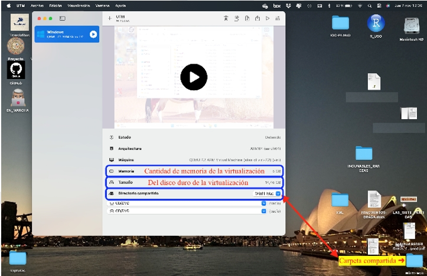
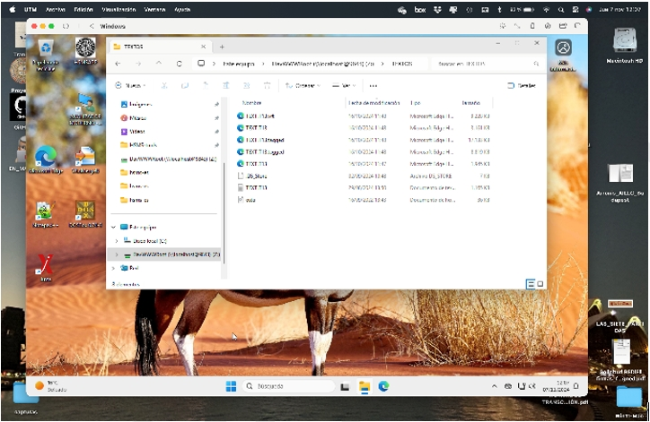
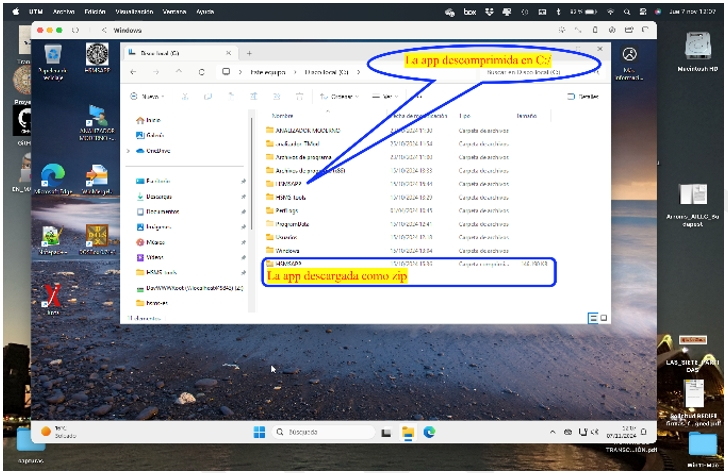

Instalación en ordenadores Apple
El Analizador Corpus OSTA no funciona de forma nativa en los ordenadores Apple, pero es posible utilizarlo por medio de una virtualización del sistema operativo Windows. La mejor opción para los ordenadores Apple con procesadores M (M1, M2, M3 y M4) es utilizar UTM. Además, es necesario un instalador de Windows 11 y, para evitar problemas, una clave de producto de Windows.
Lo mejor es seguir las instrucciones que se dan para cada una de las versiones de Windows en la pestaña galería, desde la que se podrá obtener un instalador Windows 11 con arquitectura para los ordenadores Apple.
Una vez instalado UTM, hay que instalar la virtualización de Windows. Este vídeo muestra el procedimiento de instalar la virtualización de Windows en un Mac con procesadores M.

Una vez instalado (primero) UTM y (después) Windows 11, hay que instalar el Analizador Corpus OSTA. Lo mejor es descargarlo desde dentro de Windows, no copiarlo por medio de la carpeta compartida entre ambos sistemas operativos, ya que los ficheros de más de 30MB no pueden ser copiados.

Si el Analizador Corpus OSTA se ha descargado como un fichero zip, tan solo hay que descomprimir el fichero en el directorio raíz, en C:\, nunca en el Escritorio ni ningún otro nivel inferior a C:\ porque podría dar error debido a la extrema longitud de las rutas.

Para iniciar Analizador Corpus OSTA basta con hacer clic en analizador-Corpus-OSTA dentro de C:\HSMS-tools\analizador, o en la carpeta donde se haya instalado.